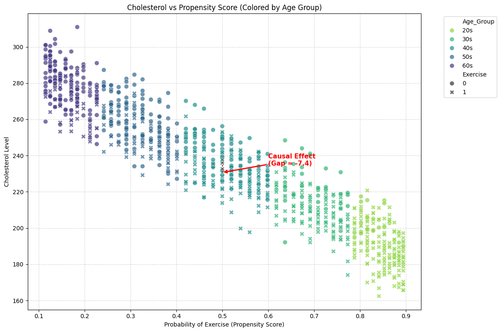
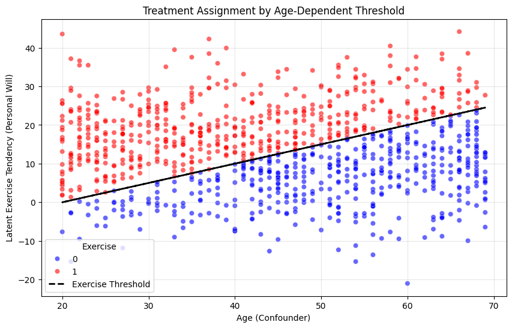

import numpy as np
import pandas as pd
import dowhy
from dowhy import CausalModel
import matplotlib.pyplot as plt
import seaborn as snsimport numpy as np
import pandas as pd
import matplotlib.pyplot as plt
import seaborn as sns
import scipy.stats as stats # 확률 계산용
np.random.seed(42)
N = 1000
# ---------------------------------------------------------
# 1. 데이터 생성 (기존 코드와 동일)
# ---------------------------------------------------------
# Confounder: Age
age = np.random.randint(20, 70, size=N)
# Threshold Calculation
threshold = 0.5 * (age - 20)
# Latent Variable (Personal Will) ~ N(12.5, 10)
mu = 12.5
sigma = 10
personal_will = np.random.normal(mu, sigma, size=N)
# Treatment Assignment
exercise = (personal_will > threshold).astype(int)
# Outcome: Cholesterol
cholesterol = 2.0 * age - 10 * exercise + np.random.normal(150, 10, size=N)
df_threshold = pd.DataFrame({
'Age': age,
'Threshold': threshold,
'Personal_Will': personal_will,
'Exercise': exercise,
'Cholesterol': cholesterol
})
# ---------------------------------------------------------
# 2. 처치 확률(Propensity Score) 역산 및 나이대 그룹화
# ---------------------------------------------------------
# (1) 확률 계산: P(Will > Threshold)
# stats.norm.sf(x, loc, scale)은 P(X > x)를 구해줍니다.
df_threshold['Propensity_Score'] = stats.norm.sf(df_threshold['Threshold'], loc=mu, scale=sigma)
# (2) 나이대(Age Group) 생성 (시각화 색상용)
# 10살 단위로 끊어서 그룹화 (20s, 30s, ..., 60s)
bins = [20, 30, 40, 50, 60, 71]
labels = ['20s', '30s', '40s', '50s', '60s']
df_threshold['Age_Group'] = pd.cut(df_threshold['Age'], bins=bins, labels=labels, right=False)
# ---------------------------------------------------------
# 3. 요청하신 시각화
# X: 처치 확률, Y: 콜레스테롤, Color: 나이대
# ---------------------------------------------------------
plt.figure(figsize=(12, 8))
# Scatter Plot
sns.scatterplot(
x='Propensity_Score',
y='Cholesterol',
hue='Age_Group', # 나이대별 다른 색
style='Exercise', # 운동 여부는 모양(O/X)으로 구분 (인과 효과 확인용)
data=df_threshold,
palette='viridis_r', # 나이가 많을수록(확률 낮음) 보라색 계열
s=60, # 점 크기
alpha=0.7
)
plt.title("Cholesterol vs Propensity Score (Colored by Age Group)")
plt.xlabel("Probability of Exercise (Propensity Score)")
plt.ylabel("Cholesterol Level")
plt.grid(True, linestyle='--', alpha=0.5)
# ---------------------------------------------------------
# 시각적 해석을 돕기 위한 보조선 (True Effect)
# ---------------------------------------------------------
# 확률 0.5 근처인 사람들의 평균 차이를 화살표로 표시
mid_prop = 0.5
subset = df_threshold[(df_threshold['Propensity_Score'] > 0.45) & (df_threshold['Propensity_Score'] < 0.55)]
mean_exerciser = subset[subset['Exercise'] == 1]['Cholesterol'].mean()
mean_non_exerciser = subset[subset['Exercise'] == 0]['Cholesterol'].mean()
if not np.isnan(mean_exerciser) and not np.isnan(mean_non_exerciser):
plt.annotate(
f'Causal Effect\n(Gap ≈ {mean_exerciser - mean_non_exerciser:.1f})',
xy=(mid_prop, mean_exerciser),
xytext=(mid_prop + 0.1, (mean_exerciser + mean_non_exerciser)/2),
arrowprops=dict(arrowstyle='->', color='red', lw=2),
fontsize=11, color='red', fontweight='bold'
)
# 실제 갭을 보여주는 수직선
plt.vlines(x=mid_prop, ymin=mean_exerciser, ymax=mean_non_exerciser, color='red', linestyle=':', lw=2)
plt.legend(bbox_to_anchor=(1.05, 1), loc='upper left')
plt.tight_layout()
plt.show()
# 데이터 샘플 확인 (확률 컬럼 추가됨)
print(df_threshold[['Age', 'Threshold', 'Propensity_Score']].head())
Age Threshold Propensity_Score
0 58 19.0 0.257846
1 48 14.0 0.440382
2 34 7.0 0.708840
3 62 21.0 0.197663
4 27 3.5 0.815940np.random.seed(42)
N = 1000
# 1. Confounder: Age
age = np.random.randint(20, 70, size=N)
# 2. Treatment Assignment (Threshold 방식)
# 아이디어: "운동을 하기 위한 진입장벽(Threshold)"은 나이가 들수록 높아진다.
# Threshold = 나이에 비례하는 어떤 값
threshold = 0.5 * (age - 20) # 예: 20세=0, 70세=25
# 개인의 운동 의지 (Latent Exercise Tendency)
# 평균은 12.5 정도지만, 사람마다 편차(표준편차 10)가 큼
# 이 '개인차(Noise)'가 있어야 overlap이 확보됨!
personal_will = np.random.normal(12.5, 10, size=N)
# 처치 할당: 개인의 의지가 나이로 인한 장벽(Threshold)을 넘었는가?
exercise = (personal_will > threshold).astype(int)
# 3. Outcome: Cholesterol
# 나이가 많을수록 높음, 운동하면 낮아짐(-10)
cholesterol = 2.0 * age - 10 * exercise + np.random.normal(150, 10, size=N)
df_threshold = pd.DataFrame({
'Age': age,
'Threshold': threshold,
'Personal_Will': personal_will,
'Exercise': exercise,
'Cholesterol': cholesterol
})
# ---------------------------------------------------------
# 시각화: Threshold 모델의 작동 원리 확인
# ---------------------------------------------------------
plt.figure(figsize=(10, 6))
# 운동 한 사람(1)과 안 한 사람(0) 시각화
sns.scatterplot(
x='Age',
y='Personal_Will',
hue='Exercise',
data=df_threshold,
palette={0: 'blue', 1: 'red'},
alpha=0.6
)
# 기준선(Threshold) 그리기
# 이 선보다 위에 있는 점은 빨강(운동 O), 아래는 파랑(운동 X)
plt.plot(age, threshold, color='black', linewidth=2, linestyle='--', label='Exercise Threshold')
plt.title("Treatment Assignment by Age-Dependent Threshold")
plt.xlabel("Age (Confounder)")
plt.ylabel("Latent Exercise Tendency (Personal Will)")
plt.legend(title='Exercise')
plt.grid(True, alpha=0.3)
plt.show()
# 데이터 확인
print(df_threshold.head())
Age Threshold Personal_Will Exercise Cholesterol
0 58 19.0 6.329096 0 276.675993
1 48 14.0 -0.088420 0 254.483295
2 34 7.0 24.388010 1 208.815630
3 62 21.0 12.086916 0 287.065575
4 27 3.5 14.239663 1 184.954853# # ---------------------------------------------------------
# # 1. 데이터 생성 (Binary Treatment)
# # ---------------------------------------------------------
# np.random.seed(42)
# N = 1000
# # Confounder: Age
# age = np.random.randint(20, 70, size=N)
# # Treatment: Exercise (Binary: 0 or 1)
# # 나이가 많을수록 운동할 확률(Propensity)이 높아짐 (교란 발생)
# exercise_threshold = 0.2 * (age - 20) + 0.5
# prob_exercise = 1 / (1 + np.exp(-(age - 45) / 20))
# exercise = np.random.binomial(1, prob_exercise)
# # Outcome: Cholesterol
# # 나이가 많을수록 높음 (+2.0 * Age)
# # 운동을 하면 낮아짐 (True Causal Effect = -10)
# cholesterol = 2.0 * age - 10 * exercise + np.random.normal(150, 10, size=N)
# df = pd.DataFrame({'Age': age, 'Exercise': exercise, 'prob_exercise': prob_exercise, 'Cholesterol': cholesterol})plt.figure(figsize=(8, 6))
# 1. 점 찍기 (색상 기준: Age)
# palette='viridis': 나이가 적을수록 보라색, 많을수록 노란색 계열
sns.scatterplot(
x='exercise',
y='Cholesterol',
data=df,
hue='Age',
palette='viridis',
alpha=0.6
)
# 2. 전체적인 (잘못된) 추세선 그리기
# scatter=False로 설정하여 점은 중복해서 찍지 않고 선만 그림
sns.regplot(
x='prob_exercise',
y='Cholesterol',
data=df,
scatter=False,
line_kws={'color': 'red', 'label': 'Naive Trend (Positive)'}
)
plt.title("Exercise vs Cholesterol (Colored by Age)")
plt.legend(title='Age')
plt.show()# ---------------------------------------------------------
# 2. 단순 비교 (Naive Estimate)
# ---------------------------------------------------------
naive_diff = df[df['Exercise']==1]['Cholesterol'].mean() - df[df['Exercise']==0]['Cholesterol'].mean()
print(f"Naive Difference (Exercise 1 - 0): {naive_diff:.4f}")# ---------------------------------------------------------
# 3. DoWhy 모델링 및 층화(Stratification) 분석
# ---------------------------------------------------------
model = CausalModel(
data=df,
treatment='Exercise',
outcome='Cholesterol',
common_causes=['Age']
)
identified_estimand = model.identify_effect()
# Stratification 적용
# num_strata=50: 데이터를 성향 점수(나이)에 따라 50개(나이 개수) 구간으로 나눔
estimate_strat = model.estimate_effect(
identified_estimand,
method_name="backdoor.propensity_score_stratification",
method_params={
'num_strata': 5
}
)
print("-" * 30)
print(f"Causal Estimate (Stratification): {estimate_strat.value:.4f}")
print(f"True Causal Effect: -10.0")
print("-" * 30)# 50개 구간으로 나누기
num_strata = 50
# [수정] duplicates='drop' 옵션 추가
# 경계가 겹치면 중복되는 구간을 하나로 합쳐서 에러를 방지합니다.
df['strata_50'] = pd.qcut(
df['propensity_score'],
q=num_strata,
labels=False,
duplicates='drop'
)
plt.figure(figsize=(15, 6))
sns.boxplot(x='strata_50', y='Age', data=df, color="skyblue")
plt.xticks(rotation=90, fontsize=8)
plt.title(f"Age Distribution per Strata (Exact Matching Check)")
plt.xlabel("Propensity Score Strata")
plt.ylabel("Age")
plt.show()
# 실제로 생성된 구간 개수 확인
print(f"Requested strata: {num_strata}")
print(f"Actual strata created: {df['strata_50'].nunique()}")# ---------------------------------------------------------
# 5. 결과 검증 (Refutation Test)
# ---------------------------------------------------------
# 우리가 구한 인과 효과가 정말 믿을만한지 테스트합니다.
print("\n=== Refutation 1: Placebo Treatment (가짜 처치) ===")
# 처치(Exercise)를 무작위로 섞어서 모델에 넣습니다.
# 기대 결과: 인과 효과가 0에 가까워야 함 (운동을 랜덤으로 배정하면 효과가 없어야 하므로)
refute_placebo = model.refute_estimate(
identified_estimand,
estimate_strat,
method_name="placebo_treatment_refuter",
method_params={"placebo_type": "permute_treatment"}
)
print(refute_placebo)
print("\n=== Refutation 2: Add Random Common Cause (랜덤 변수 추가) ===")
# 데이터에 아무 상관 없는 랜덤 변수를 추가해서 다시 분석합니다.
# 기대 결과: 원래 구한 인과 효과(-10.0 근처)가 크게 변하지 않아야 함
refute_random = model.refute_estimate(
identified_estimand,
estimate_strat,
method_name="random_common_cause"
)
print(refute_random)